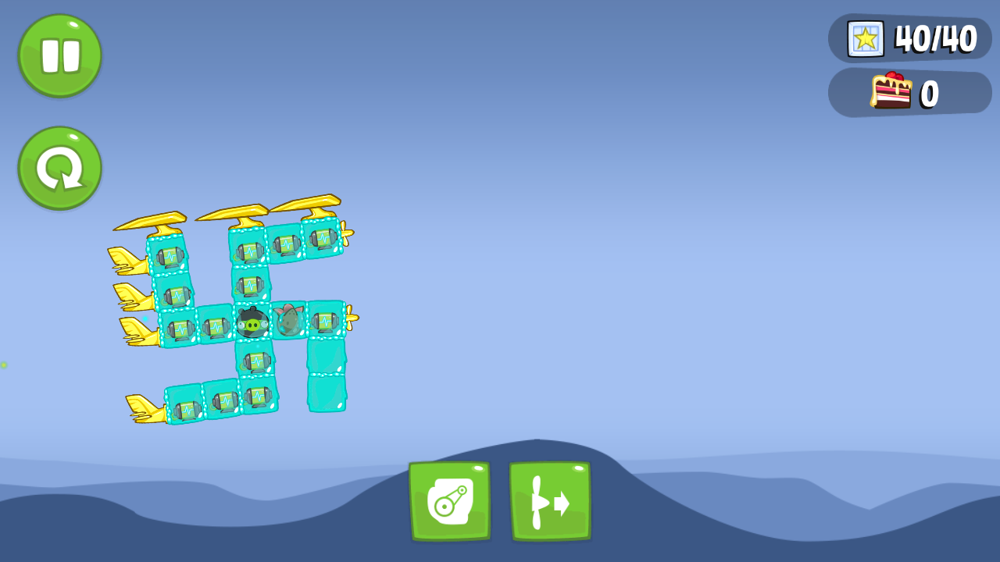

| Название партии | Пупсики‐Инквизиторы | Чаша опыта Стандофф2 | smoke on the WATER |
| Символ партии |
|
|
|
| Рейхсканцлер | sit | RUK | Timoha64 |
| Заместитель рейхсканцлера | Z[2]eon | Zedemix | Михаил Фрэдо |

Михаил Фрэдо, изобретший новое приветствие «Зига», первый раз демонстрирует его другим членам организации |

ВСУ[3] |
Ручку позолоти | Вентилятор |